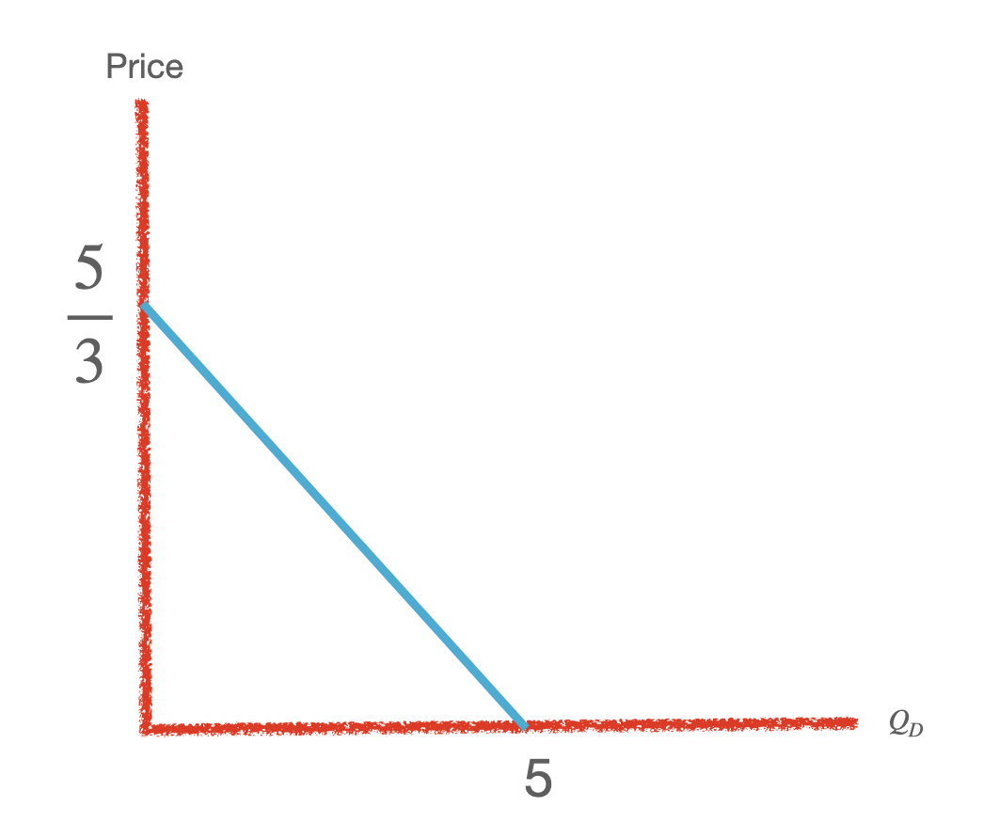

1. \(Q_D=5-3X\) , What is the maximum \(Q_d\) and price possible ?

when \(Q_D=0\) or the y intercept , substituting \(Q_D=0\) in equation \(Q_D+5-3X\)
when p=0 , or x intercept which we can find by substituting p=0 in equation \(Q_D+5-3X\)
2. If slope of budget line is \(\frac{-5}{3} , p_x=2 , income=20\) , Draw the budget line.
3. Draw the budeget line when \(p_x=3\) changes to \(p_x'=6\) when \(p_y=4,income=24\)
4. Draw the supply curve by two industries a and b \(x_a=-4+3y\) and \(x_b=4+3y\) and therir aggrate supply curve.
\(u=x^{0.2}y^{0.8}\) s.t. \(3x+6y=36\) , find optimal solution.
\(u=x^{0.5}y^{0.5}\) s.t. \(3x+3y=36\) , find optimal solution.
\(u=x^{2}y^{3}\) s.t. \(2y=36\) , find optimal solution.
\(u=x_1^2x_2^3x_3^4x_4^{0.2}x_5^{0.3}x_6^{0.5}\) s.t. \(3x_1+2x_2+3x_3+5x_4+2x_5+x_6=360\) , find optimal solution.
\(u=-2x-3y\) s.t. \(2x+3y=60\)
\(u=-2x+3y\) s.t. \(3x+4y=6\)
\(u=-2x_1-3x_2+0.5x_3\) s.t. \(x_1+x_2+96x_3=48\)
1. \(u=min(x+y,x-y)\) s.t. \(x+y=10\)
2. \(u=min(x+3y,2x-y)\) s.t. \(x+y=10\)
3. \(u=max(x+2y)\) s.t. \(x+3y=24\)
4. \(u=min(x+y)+max(x+y)\) s.t.\(p_x+p_y=20\)